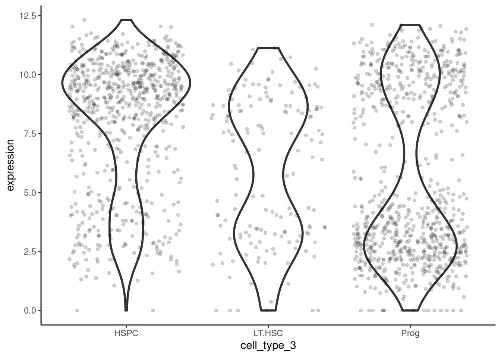
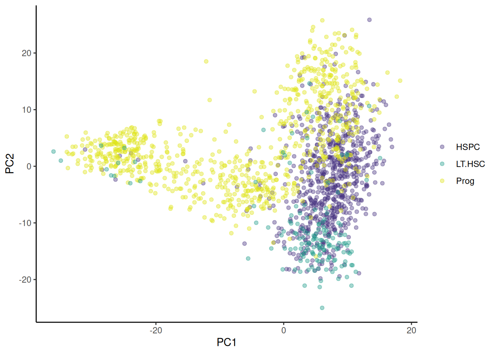

# üê≠ import the three datasets
lthsc <- read_csv("data-raw/surfaceome_lthsc.csv")
hspc <- read_csv("data-raw/surfaceome_hspc.csv")
prog <- read_csv("data-raw/surfaceome_prog.csv")Self study
Semester 2: Additional üê≠ stem cell labels
Introduction
We have analysed the Nestorowa et al. (2016) stem cells categorised as LTHSC, HSPC, or Prog. The cell types were determined from flowcytometry markers. Additional markers allow the cells to be categorised into 12 other types (including unknown): CMP, GMP, LMPP, LTHSC, LTHSC-ESLAM, MEP, MPP_broad, MPP1, MPP2, MPP3, STHSC, unknown. These cell types are mutually exclusive, meaning that a cell can only be one of these types.
In this self-study, you will:
- import all the expression data and gene information for the three cell types
- import the data that gives the additional labels
- combine the data and pivot it to have the expression values in a single column
- plot the expression of one gene,
Emb, in each cell type for the 3-type categorisation and the 12-type categorisation - conduct a PCA on all the data and plot the first two components using colour/shapes for the 12-type categorisation, the 3-type categorisation and the expression of
Emb.
Set up
üé¨ Open your mice-88H RStudio Project.
üé¨ Save er_cell_types.csv.
üé¨ Open a new or existing script
üé¨ Load tidyverse (Wickham et al. 2019).
Import and combine data
The raw data
Import the data for the LT-HSC, HSPC and the Progenitor cells.
üé¨ Import surfaceome_lthsc.csv, surfaceome_hspc.csv and surfaceome_hspc.csv
Note there are 155 LT-HSC + 701 HSPC + 798 Progenitor = 1654 total cells.
We will need to join the three datasets using ensembl_gene_id to match the rows.
üé¨ Combine the three datasets by ensembl_gene_id and save the result as cell_expr.
# combine the three datasets
cell_expr <- hspc |>
left_join(prog,
by = "ensembl_gene_id") |>
left_join(lthsc,
by = "ensembl_gene_id")Gene information
You will likely want the gene information in the dataframe along with the ensembl_gene_id. Rather the connecting again to Ensembl (Martin et al. 2023; Birney et al. 2004) and BioMart (Smedley et al. 2009) using the R package biomaRt (Durinck et al. 2009, 2005), which means loading more packages, managing conflicts and using more compute, we can use the information we already have in the results/hspc_prog_results.csv file. This works because the same 280 genes are in the three raw data files and this results file.
We need only the ensembl_gene_id, (to join the information), the external_gene_name and the description.
üé¨ Import the gene information from results/hspc_prog_results.csv and save as gene_info.
# üê≠ import the gene information
gene_info <- read_csv("results/hspc_prog_results.csv") |>
select(ensembl_gene_id, external_gene_name, description)üé¨ Join the gene_info to the cell_expr data.
# üê≠ join the gene information to the cell_expr data
cell_expr <- cell_expr |>
left_join(gene_info,
by = "ensembl_gene_id")12-type categorisation data
The information in the er_cell_types.csv has 14 columns. The first column gives the cell_id (e.g., HSPC_001) the next 12 columns are named with the cell type or unknown and contain a 0 or 1. These columns are useful if you want to compare (plot or DE), for example, CMP vs not CMP. The last column gives the cell type which is useful to include all the labels in a plot.
üé¨ Import er_cell_types.csv
cell <- read_csv("data-raw/er_cell_types.csv")üé¨ Check the dataframe has the number of rows and columns you were expecting and that column types and names are as expected.
üé¨ Examine the number of cells of each type:
cell |>
group_by(type) |>
count()# A tibble: 12 × 2
# Groups: type [12]
type n
<chr> <int>
1 CMP 317
2 GMP 120
3 LMPP 246
4 LTHSC 233
5 LTHSC-ESLAM 38
6 MEP 354
7 MPP1 27
8 MPP2 11
9 MPP3 60
10 MPP_broad 202
11 STHSC 36
12 unknown 10Expression of a specific gene in each cell type
Pivot to long form
The cell_expr data has the expression of each gene in each cell. The cell_ids are in columns and the gene are in rows.
We will need to pivot the cell_expr data to have the expression values in a single column with additional columns giving the cell_id and gene.
# üê≠ pivot the cell_expr data
cell_expr_long <- cell_expr |>
pivot_longer(cols = -c(ensembl_gene_id,
external_gene_name,
description),
names_to = "cell_id",
values_to = "expression")Add the two types of categorisation
We also want to add the two types of categorisation (the 3-type and the 12-types) to the cell_expr_long data. To add the 3-type categorisation we extract the information in the cell_id column into two columns: one with the cell type and one with the number. We did this before in making a PCA plot
üé¨ Extract the cell type and cell number from the cell_id column (keeping the cell_id column):
cell_expr_long <- cell_expr_long |>
extract(cell_id,
remove = FALSE,
c("cell_type_3", "cell_number"),
"([a-zA-Z.]{4, 6})_([0-9]{3})")To add the 12-type categorisation we need to join the cell_expr_long data to the cell data on the cell_id
üé¨ Add the 12-type categorisation to the cell_expr_long data.
cell_expr_long <- cell_expr_long |>
left_join(cell |> select(cell_id, type),
by = "cell_id")Plot gene expression under 3-type categorisation
I have chosen the gene Emb to plot the expression in each cell type. I prefer the use of violin plots and points because multimodal distributions are more obvious than in boxplots
üé¨ Plot the expression of Emb in each cell type for the 3-type categorisation.
# üê≠ plot the expression of Emb in each cell type
cell_expr_long |>
filter(external_gene_name == "Emb") |>
ggplot(aes(x = cell_type_3, y = expression)) +
geom_jitter(width = 0.4, alpha = 0.2, pch = 16) +
geom_violin(fill = NA, linewidth = 1) +
theme_classic()
Plot expression under 12-type categorisation
# üê≠ plot the expression of Emb in each cell type
cell_expr_long |>
filter(external_gene_name == "Emb") |>
ggplot(aes(x = type, y = expression)) +
geom_jitter(width = 0.2, alpha = 0.2, pch = 16) +
geom_violin(fill = NA, linewidth = 1) +
theme_classic()
PCA
We will carry out the the same steps to do the PCA:
- Select the log2 transformed normalised counts. You can only use numerical data in PCA.
- Transpose our data. We have genes in rows and samples in columns (this is common for gene expression data). However, to treat the genes as variables, PCA expects samples in rows and genes in columns.
- Add the gene names as column names in the transposed data
- Perform the PCA
- Extract the scores on the first two principal components and label the data
- Plot the the first two principal components as a scatter plot
Refer to the workshop for more explanation on PCA.
üé¨ Transpose the log2 transformed normalised counts:
cell_expr_trans <- cell_expr |>
dplyr::select(starts_with(c("HSPC_", "Prog_", "LT.HSC_"))) |>
t() |>
data.frame()üé¨ Set the column names to the gene ids:
colnames(cell_expr_trans) <- cell_expr$ensembl_gene_idüé¨ Perform PCA on the log2 transformed normalised counts:
pca <- cell_expr_trans |>
prcomp(rank. = 8)To plot the PC1 against PC2 we will need to extract the PC1 and PC2 “scores” from the PCA object and add labels for the cells. Our PCA object is called pca and the scores are in pca$x. The cells labels will come from the row names of the transformed data.
üé¨ Create a dataframe of the PC1 and PC2 scores (in pca$x) and add the cell ids:
pca_labelled <- data.frame(pca$x,
cell_id = row.names(cell_expr_trans))üé¨ Extract the cell type and cell number from the cell_id column (keeping the cell_id column):
pca_labelled <- pca_labelled |>
extract(cell_id,
remove = FALSE,
c("cell_type_3", "cell_number"),
"([a-zA-Z.]{4, 6})_([0-9]{3})")üé¨ Add the 12-type categorisation to the pca_labelled data.
pca_labelled <- pca_labelled |>
left_join(cell |> select(cell_id, type),
by = "cell_id")üé¨ Add the expression of Emb to pca_labelled data. I‚Äôve also renamed the expression column from the filtered cell_expr_long so it is Emb_expr in the pca_labelled data.
pca_labelled <- pca_labelled |>
left_join(cell_expr_long |>
filter(external_gene_name == "Emb") |>
select(cell_id, "Emb_expr" = expression),
by = "cell_id")üé¨ Plot PC2 against PC1 and colour by cell_type_3 type:
pca_labelled |>
ggplot(aes(x = PC1, y = PC2,
colour = cell_type_3)) +
geom_point(alpha = 0.4) +
scale_colour_viridis_d(end = 0.95, begin = 0.15,
name = NULL) +
theme_classic()
üé¨ Plot PC2 against PC1 and colour by cell_type_3 type:
pca_labelled |>
ggplot(aes(x = PC1, y = PC2,
colour = type)) +
geom_point(alpha = 0.5) +
scale_colour_viridis_d(name = NULL) +
theme_classic()
üé¨ Plot PC2 against PC1 and colour by expression of Emb and shape by cell_type_3 type:
pca_labelled |>
ggplot(aes(x = PC1, y = PC2,
colour = Emb_expr,
shape = cell_type_3)) +
geom_point() +
scale_colour_viridis_c(end = 0.95, begin = 0.15,
name = NULL) +
theme_classic()üé¨ Easier to see as facets?:
pca_labelled |>
ggplot(aes(x = PC1, y = PC2,
colour = Emb_expr)) +
geom_point() +
scale_colour_viridis_c(end = 0.95, begin = 0.15,
name = NULL) +
facet_wrap(~cell_type_3)
Pages made with R (R Core Team 2024), Quarto (Allaire et al. 2024), knitr (Xie 2024, 2015, 2014), kableExtra (Zhu 2021)
References
Allaire, J. J., Charles Teague, Carlos Scheidegger, Yihui Xie, and Christophe Dervieux. 2024. “Quarto.” https://doi.org/10.5281/zenodo.5960048.
Birney, Ewan, T. Daniel Andrews, Paul Bevan, Mario Caccamo, Yuan Chen, Laura Clarke, Guy Coates, et al. 2004. “An Overview of Ensembl.” Genome Research 14 (5): 925–28. https://doi.org/10.1101/gr.1860604.
Durinck, Steffen, Yves Moreau, Arek Kasprzyk, Sean Davis, Bart De Moor, Alvis Brazma, and Wolfgang Huber. 2005. “BioMart and Bioconductor: A Powerful Link Between Biological Databases and Microarray Data Analysis.” Bioinformatics 21: 3439–40.
Durinck, Steffen, Paul T. Spellman, Ewan Birney, and Wolfgang Huber. 2009. “Mapping Identifiers for the Integration of Genomic Datasets with the r/Bioconductor Package biomaRt.” Nature Protocols 4: 1184–91.
Martin, Fergal J, M Ridwan Amode, Alisha Aneja, Olanrewaju Austine-Orimoloye, Andrey G Azov, If Barnes, Arne Becker, et al. 2023. “Ensembl 2023.” Nucleic Acids Research 51 (D1): D933–41. https://doi.org/10.1093/nar/gkac958.
Nestorowa, Sonia, Fiona K. Hamey, Blanca Pijuan Sala, Evangelia Diamanti, Mairi Shepherd, Elisa Laurenti, Nicola K. Wilson, David G. Kent, and Berthold Göttgens. 2016. “A Single-Cell Resolution Map of Mouse Hematopoietic Stem and Progenitor Cell Differentiation.” Blood 128 (8): e20–31. https://doi.org/10.1182/blood-2016-05-716480.
R Core Team. 2024. R: A Language and Environment for Statistical Computing. Vienna, Austria: R Foundation for Statistical Computing. https://www.R-project.org/.
Smedley, Damian, Syed Haider, Benoit Ballester, Richard Holland, Darin London, Gudmundur Thorisson, and Arek Kasprzyk. 2009. “BioMart Biological Queries Made Easy.” BMC Genomics 10 (1): 22. https://doi.org/10.1186/1471-2164-10-22.
Wickham, Hadley, Mara Averick, Jennifer Bryan, Winston Chang, Lucy D’Agostino McGowan, Romain François, Garrett Grolemund, et al. 2019. “Welcome to the tidyverse.” Journal of Open Source Software 4 (43): 1686. https://doi.org/10.21105/joss.01686.
Xie, Yihui. 2014. “Knitr: A Comprehensive Tool for Reproducible Research in R.” In Implementing Reproducible Computational Research, edited by Victoria Stodden, Friedrich Leisch, and Roger D. Peng. Chapman; Hall/CRC.
———. 2015. Dynamic Documents with R and Knitr. 2nd ed. Boca Raton, Florida: Chapman; Hall/CRC. https://yihui.org/knitr/.
———. 2024. Knitr: A General-Purpose Package for Dynamic Report Generation in r. https://yihui.org/knitr/.
Zhu, Hao. 2021. “kableExtra: Construct Complex Table with ’Kable’ and Pipe Syntax.” https://CRAN.R-project.org/package=kableExtra.